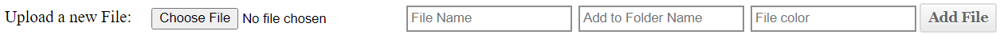
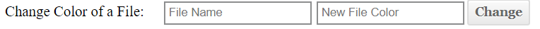
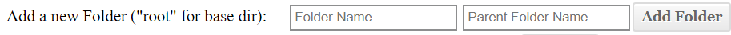
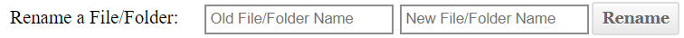
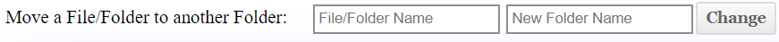
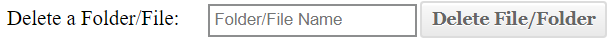
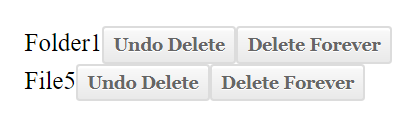

This UI Component allows users to upload any file type to the File Manager.
Choose File: Upload the file binary.
File Name: Choose the desired Name.
Add to Folder Name: Add the file to the base('root') directory or to an existing folder by entering its name.
File Color: Choose a valid CSS color, if this is left empty, the color is defaulted to black.
This UI Component allows users to change the color of any File, provided that it is a valid css color.
File Name: Choose the existing file by its name.
New File Color: Choose a a new valid CSS color.
This UI Component allows users to add a new folder to the File Manager. Users may add folders to the base('root') directory or inside another existing folder.
Folder Name: The existing folder name.
Parent Folder Name: The existing parent folder name ('root' for the top-level folder).
This UI Component allows users to rename an existing file or folder to another name.
Old File/Folder Name: The existing file or folder name.
New File/Folder Name: The new desired name for the file or folder.
This UI Component allows users to move an existing file or folder to another folder or into the top level, base('root') directory.
File/Folder Name: The existing file or folder name.
Folder Name: The existing folder name that the user wishes to place their contents (file or folder) in.
This UI Component allows users to delete an existing file or folder. The deleted file/folder is moved into the 'trash' section at the bottom of the File Manager.
File/Folder Name: The existing file or folder name.
This UI Component gives users an option of restoring or deleting permanently items in their 'trash' section.
A restored File or Folder will be added back to their original location in the File Manager, with its contents intact(if applicable).
Undo Delete: Restores back either the file or folder to its original location.
Delete Forever: Deletes permanently the file or folder.
